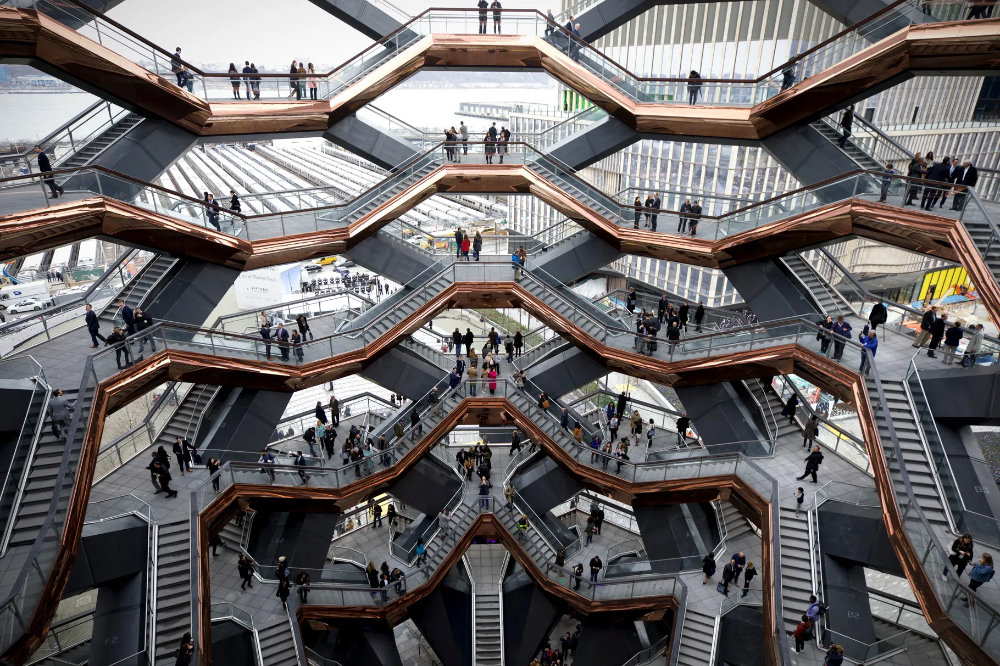

The Vessel at Hudson Yards, New York, NY
The 150-foot-tall sculpture is a novelty, both in its design and the experience of climbing it.
 Image Credit: Courtesy of Creative CommonsAs one of Manhattan's newest monuments, opened in 2019, the Vessel was designed by Heatherwick Studio as the centrepiece of Hudson Yards—the largest private real estate development in American History. Hudson Yards transformed a rail yard in Manhattan into a brand‑new neighborhood, comprising offices, residences, retail outlets, and five acres of public spaces. The structure is an architectural work of art that has been referred to by CNN and Fortune as Manhattan's answer to the Eiffel Tower
.
Concept
The studio of the english architect and designer Thomas Heatherwick was invited to design a public centerpiece for the new district. To create something meaningful, the study wanted to develop a structure that visitors could use, touch and interact with. With this thought the idea of a new reference point that could be climbed and explored was developed, inspired by the ancient wells of India or Baoris, a kind of giant wells with stairs and terraces around, intended to collect and store water from rain.
Thomas Heatherwick and Heatherwick Studio imagined this interactive work of art as a focal point where people can enjoy new perspectives of the city and each other, from different heights, angles and points of view.
Structure
The publicly accessible structure is composed of 154 stretches of intricately interconnected stairs and almost 2500 steps where the effect of going up and down creates a personal rhythm for each visitor. With a height of 46 meters, it raises visitors above the square and reveals views across Hudson Yards and Manhattan from 80 platforms arranged around its perimeter.
This sculpture was created with a structural steel frame that displays a conical shape, narrower at its base, 15m linear and expands as it rises to reach 45m at its highest part. It was built in Italy and shipped by ship to Newark and from there transported through Hudson to the site where it was to be assembled. The construction began on April 18, 2017, with the installation of the first 10 pieces of a total of 75.
Materials
The Heatherwick Studio team used a non-corrosive steel to coat each level of the structure and copper-colored metal sheets enveloped the soffits, reflecting people standing or walking in the square below, while the interior materials, such as the concrete, are much darker and consistent with the urban environment.
Cost
Although Vessel had originally been slated to cost $75 million, the projections were later revised to between $150 and $200 million. Heatherwick attributed the greatly increased price tag to the complexity of building the steel pieces.